Design Patterns
Qui suis je ?
Développeur & Architecte @ Pryntec
+10 XP
Expert PHP, Senior Android, C++, JS , BDD, etc ...
Informatique industrielle, vidéo surveillance, ...
En ligne : oroger.fr / grunk @ dvp | stackoverflow | github

Principes des design patterns
Définition
Solution à un problème récurrent
Orienté objet
Indépendant du langage
Historique
- 1977
- Christopher Alexander
- Architecte
Historique
- Monde du batiment
- Problème récurrents
- Patron de conception = solution à un problème
- Aide à la décision
G.O.F
- Erich Gamma
- Richard Helm
- Ralph Johnson
- John Vlissides
Design Patterns : Elements of Reusable Object-Oriented Software
Description
- Nom
- Problématique
- Solution
- Conséquences
Quand ? Pourquoi ?
- Dès qu'un problème de conception se pose
- Utilisation d'une solution éprouvée
- Productivité
- Qualité de code
- Bonnes pratiques
 Over
engineering
Over
engineering
Répartition
- Patrons créateurs
- Patrons structuraux
- Patrons comportementaux
Les patterns createurs
Singleton
Problématique
- Une seule et unique instance
- Accès à cette instance
Quand l'utiliser ?
Une seule instance d'une classe peut exister
- Ressource système
- Class d'application
- Gestion de journaux *
Conséquences
- Controle l'unicité d'instance d'une classe
- Induit des problèmes de thread safety
La controverse
- Utilité parfois discutable selon le langage
- Signe de mauvais design
- Difficile à tester unitairement
Un peu de théorie
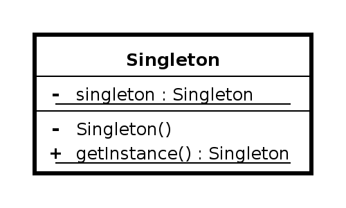Implémentation naïve
public class Singleton {
private static Singleton instance;
private Singleton() {}
public static Singleton getInstance() {
if (instance == null) {
instance = new Singleton();
}
return instance;
}
}
Implémentation Thread Safe
public class Singleton {
private static Singleton instance = new Singleton();
private Singleton() {}
public static Singleton getInstance() {
return instance;
}
}
Abstract Factory
Problématique
Fournir différents objets d'une même famille sans connaitre leur implémentation concrète
Quand l'utiliser ?
- Objets regroupés en famille (UI , Documents)
- Eviter les couplages forts
- Masquer la complexiter d'instanciation
Fabrique non abstraite
- Attention à faire la différence. Fabrique = bonne pratique. Pas un DP
- Abstract factory permet une évolutivité plus simple
Un peu de théorie
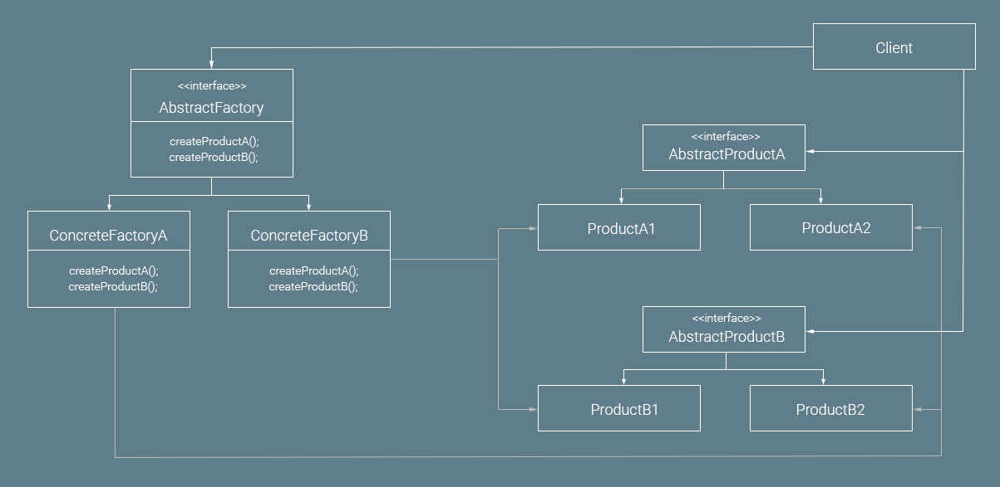Implémentation
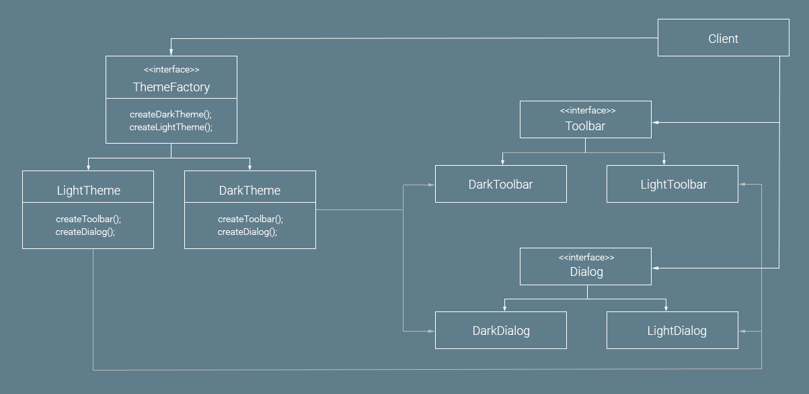Builder
Problématique
Permettre d'obtenir des réprésentations différentes d'un objet avec le même procédé de construction
Quand l'utiliser ?
- Données de construction incomplète
- Simplification de classe : limiter les constructeurs
Un peu de théorie

Solution à
Pizza p = new Pizza();
p.setTaille(Taille.GRANDE);
p.setFromage(Fromage.CHEDDAR);
Ou encore
Pizza sansolive = new Pizza(Taille.GRANDE,Fromage.CHEDDAR,false);
Pizza avecjambon = new Pizza(Taille.GRANDE,Fromage.CHEDDAR,false,true);
Forme la plus courante
Pizza pizza = new PizzaBuilder()
.setTaille(Taille.GRANDE)
.setFromage(Fromage.MOZZA)
.setJambon(true)
.setOlive(false)
.build();
Les patterns structuraux
Adapter
Problématique
Faire fonctionner ensemble des classes aux interfaces incompatible.Quand l'utiliser ?
- Besoin de convertir l'interface d'une classe en quelque chose de compréhensible
- Impossible de modifier l'interface incompatible
Un peu de théorie
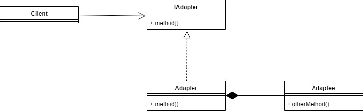Tesla vs Renault
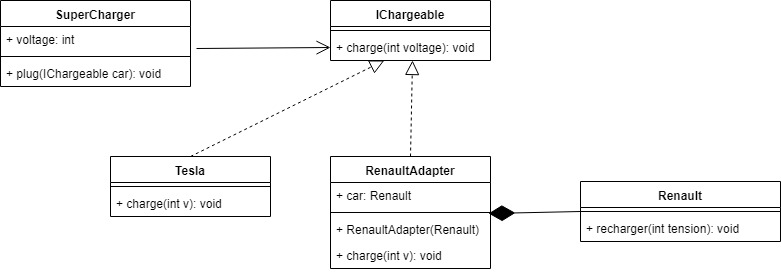Decorator
( a.k.a Wrapper )Problématique
Ajouter des fonctionnalités à une classe dynamiquement.Quand l'utiliser ?
- Ajout de responsabilités optionelles à un objet
- Pas d'héritage
Un peu de théorie
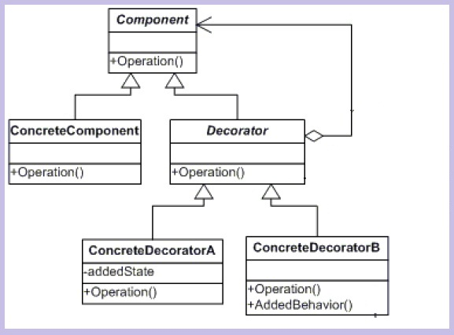Pratique
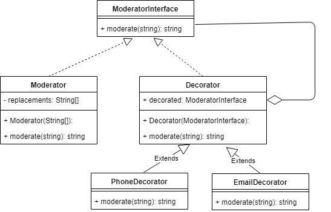Composite
Problématique
Gérer une hiérarchie d'objet sans limite de profondeur.Quand l'utiliser ?
- Hierarchie à profondeur indéterminée
- Besoin de traiter un parent ou un enfant de manière identique
Un peu de théorie
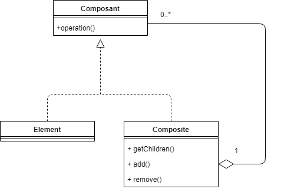Composite
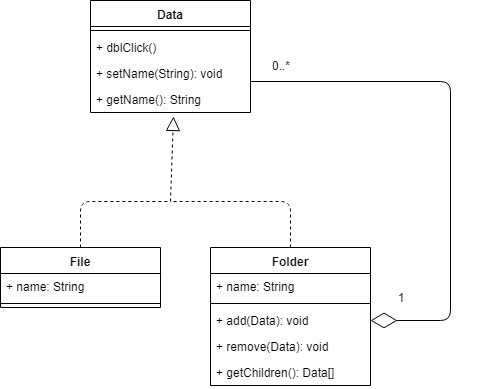Facade
Problématique
Simplifier un sous système trop complexe.Quand l'utiliser ?
- Simplifier la lecture/utilisation d'un sous système
- Refactoring impossible => rétro compatibilité
- Limiter les dépendances entre le client et le sous système
Un peu de théorie
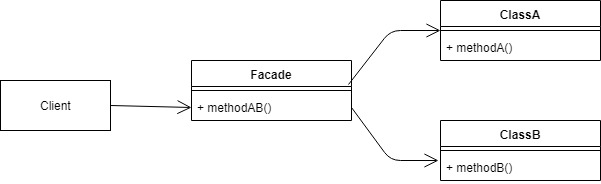En pratique
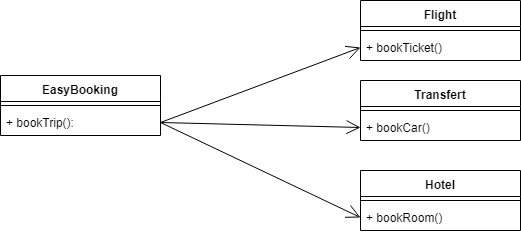En pratique
Flight f = new Flight();
f.bookTicket();
Transfert t = new Transfert();
t.bookCar();
Hotel h = new Hotel();
h.bookRoom();
EasyBooking e = new EasyBooking();
e.bookTrip();
Proxy
Problématique
Controler l'accès à un objet en fournissant un intermédiaireQuand l'utiliser ?
- Accès à l'objet doit être controller
- Des fonctionnalités supplémentaires sont nécessaires
- Respect de l'interface de l'objet concret
Proxies ...
- Virtual
- Remote
- Protection
- Smart reference
Un peu de théorie

Decorator vs Proxy
| Decorator | Proxy |
| Ajout fonctionnalité dynamiquement | Controle l'accès à l'objet |
| Objet connu du client (constructeur) | Objet masqué au client |
| Au runtime | A la compilation |
Proxy
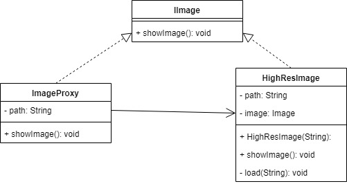Value Object
Un cas à part
Petit objet qui représente une petite entité dont l'égalité repose sur la comparaison de ses valeures.Objet Vs Value Object
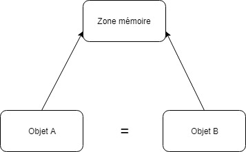Intérêts
Code plus expressif
// Sans :
Map< Long, String >
// Avec:
Map< PersonId, PhoneNumber >
Intérêts
Code plus sécurisé , erreurs évitées
Person(String lastName, String email) { ... }
new Person("John", "Doe"); // compile
Person(LastName lastName, Email email) { ... }
new Person(
new Email("john@doe.com"),
new LastName("Doe"));// doesn't compile!
Intérêts
Fléxibilité interneclass PersonId { Long id; }class PersonId { String value; public PersonId(Long value) { this.value = value.toString(); } }
Intérêts
Logique embarquée
class Email {
String value;
Email(String value) {
if (!value.contains("@")) {
throw new InvalidEmailException(value);
}
this.value = value;
}
}
Inconvenients
- Nombre de classes dans le projet
- Immutable => Attention aux performances
Les patterns comportementaux
Iterator
Problématique
Un objet complexe doit être traversable sans exposer sa représentation.Quand l'utiliser ?
- Besoin de parcourir des objets
- Besoin d'un moyen homogène d'itération entre plusieurs objets
Un peu de théorie
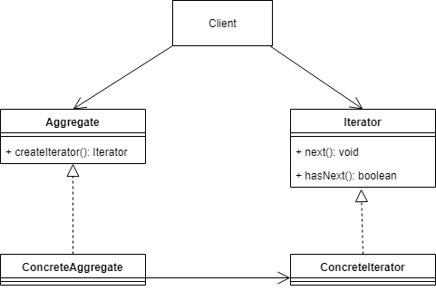Iterator
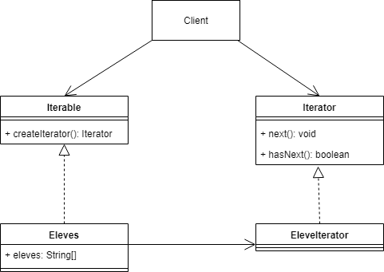Strategy
Problématique
Pouvoir choisir dynamiquement un algorithmeQuand l'utiliser ?
- Plusieurs algorithmes similaires
- Limitation des responsabilités et inversion de dépendance
Un peu de théorie
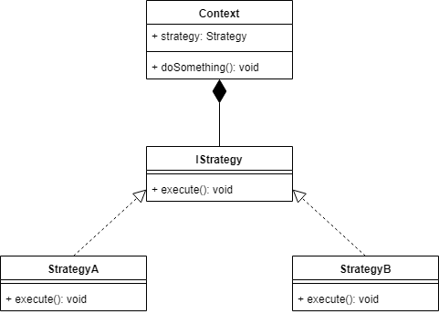Strategy

Template method
Problématique
Définir le squelette d'un algorithme en déléguant certaines étapes à des sous-classes.Quand l'utiliser ?
- Un fonctionnement global commun
- Des particularités à gérer par des sous classes
Un peu de théorie
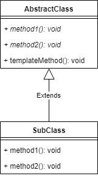Template method
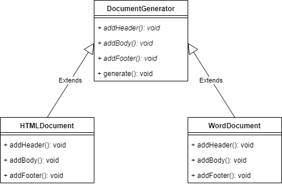State
Problématique
Changer le comportement d'un objet en selon son état interne.Quand l'utiliser ?
- Isolation des algo propre à chaque état
- Modification de l'instance et non recréation
- Masquage de la complexité
Un peu de théorie
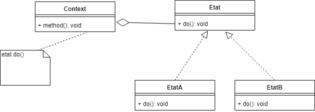Bus à état
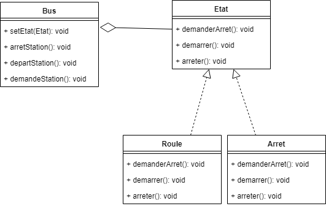Observer
Problématique
Notifier un ensemble d'objet d'un changement d'étatQuand l'utiliser ?
- Besoin d'informer un ou plusieurs objet immédiatement
- Limiter le couplage
Utiliser l'existant
- Java : Observable
- C# : IObservable
- C++ : boost::signals2 ou QT signal/slot
- PHP : SplSubject
- ...
Un peu de théorie
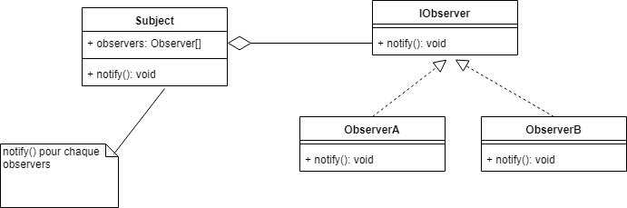Diffusion de news
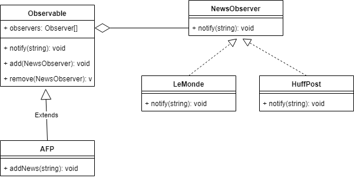Mediator
Problématique
Gérer l'intéraction de différents objets entre eux en limitant leur couplage.Quand l'utiliser ?
- Ensemble d'objet devant intéragir ensemble
- Pas de couplage entre ces objets
- Pouvoir varier l'intéraction des objets indépendamment